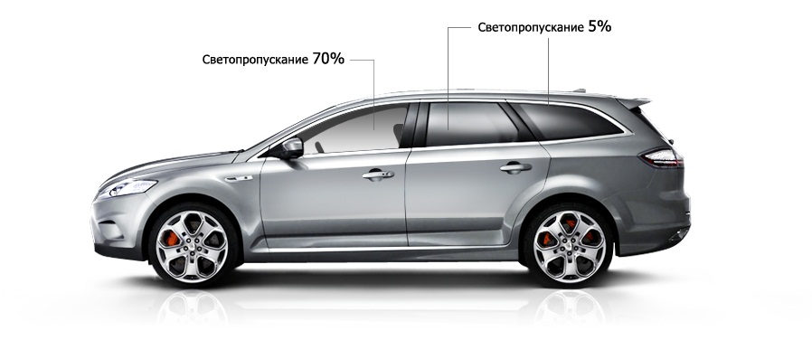
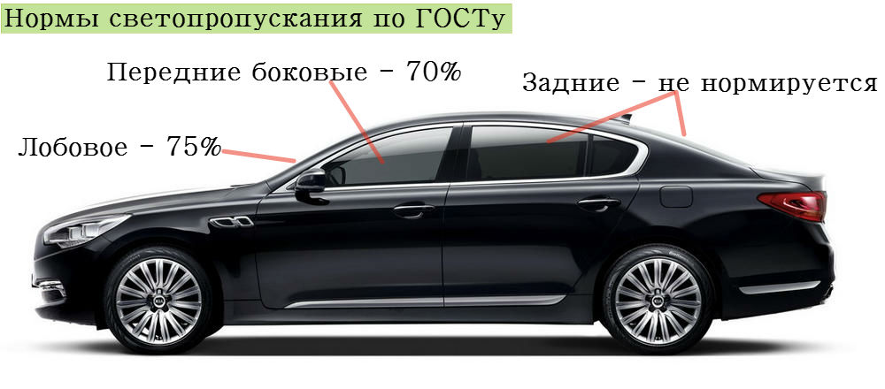
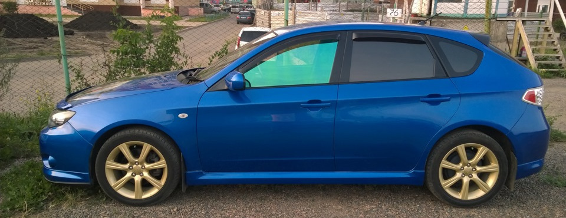

Что такое евротонировка?
Это тонировка стекол автомобиля согласно ПДД,когда передние стекла автомобиля
не тонируются вовсе или оклеиваются
светлой пленкой с макимальным светопропусканием, а задняя полусфера автомобиля тонируется любой тонировочной пленкой.
Сразу отметим, что в народе евротонировка имеет много синонимов: тонировка по евростандарту, тонировка по ГОСТу,
тонировка без передних стекол, тонировка европейка, и т. д.
ПДД ограничивают светопропускание лобового стекла 80%, а передних боковых 75%. Это значит, что по правилам любая тонировочная пленка
(самые популярные из них имеют степень светопропускания 10. -20%) будет для этих стекол слишком темной.

Какая тонировка разрешена по ГОСТу
Следует отметить, что тонировка авто по ГОСТу касается только передних дверных и
лобового стекла. Для этих поверхностей существуют определенные критерии. А вот степень затемнения поверхности заднего стекла или
стекол второго ряда дверей не регулируется государством.
То есть, чтобы соблюсти подобный закон, особое внимание требуется
уделить правильному оформлению только передних стекол транспортного средства.
Тонировка переднего лобового стекла
Тонированное лобовое стекло средства передвижения должно соответствовать следующим характеристикам:
Параметры пропуска света – 75 процентов
Пленка не должна ни коим образом затруднять видимость с места водителя.
То есть, совершенно не искажать цвета, правильно передавать формы предметов и расстояния до них.
Тонировка боковых и задних стекол
Тонировка по ГОСТу передних стекол дверей обязана соответствовать следующим нормам:
Пропускающая способность затонированной поверхности – 70 процентов
Отсутствие каких-либо видом искажения видимых предметов в любое время суток.
Учитывая, что данный закон не распространяется на заднее стекло, его можно делать максимально затемненным,
конечно, если это не мешает водителю управлять своим транспортным средством.


Что мы предлагаем
На сегодняшний день с появлением атермальных пленок многие проблемы остались в прошлом.
Эти современные тонировочные пленки позволяют наносить их на стекла передних дверей и на лобовое
стекло, не нарушая при этом вышеупомянутые стандарты.
Движение на автомобиле с такой пленкой становится более комфортным при любых погодных условиях.
Днем снижается яркость бликов и чрезмерная яркость всего вокруг, а ночью видимость также
улучшается по причине того, что свет фар встречных автомобилей становится не таким ярким.
По теплозащите атермальные пленки сопоставимы с обычными металлизироваными пленками среднего
затемнения (15%) и это способствует более слабому нагреванию салона. Также салон автомобиля
не будет выгорать - так как весь ультрафиолет задержит пленка.
Подытожив вышесказанное, можно сделать вывод, что будущее тонировки - за евротонировкой
с использованием атермальной пленки.
Сделав услугу один раз, вы забудете о вопросе тонировки на 5-10 лет.
Качество пленки позволяет эксплуатировать ее значительно больше ее
гарантийного срока. Мы имеем большой опыт работы различными пленками
и поможем Dам подобрать именно такую тонировку, которая
максимально удовлетворит ваши запросы.
